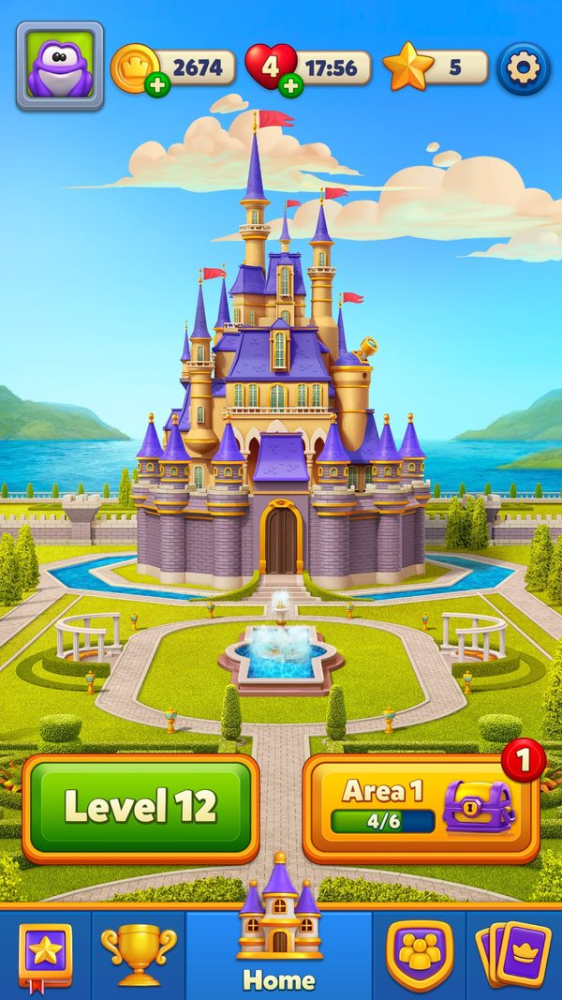
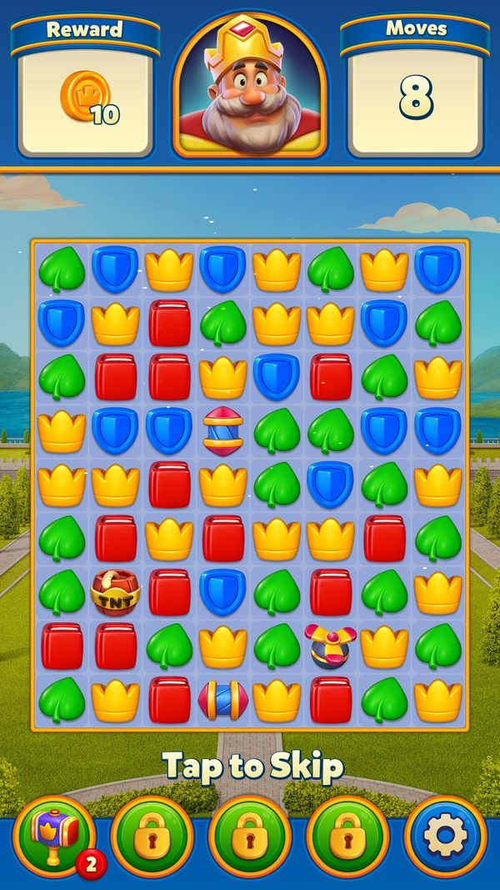
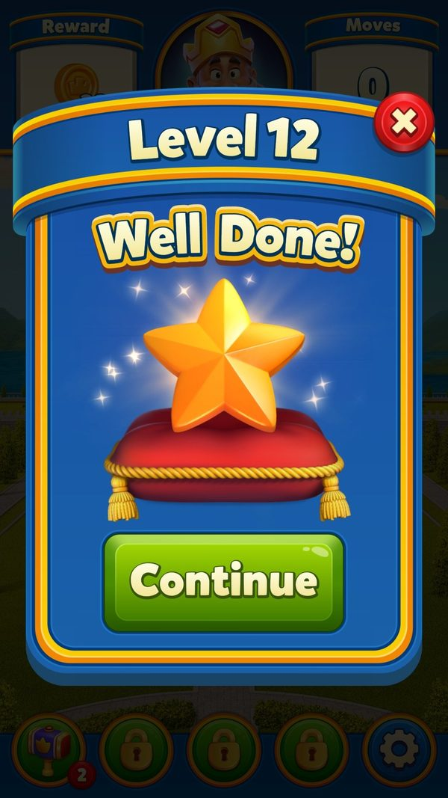
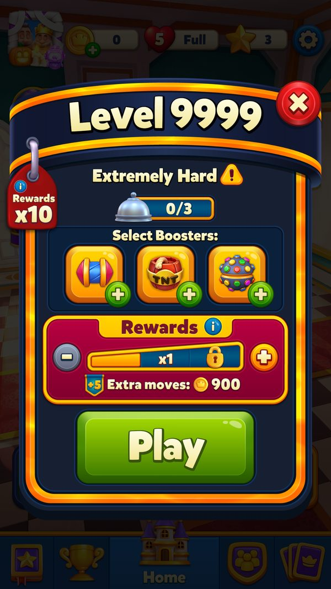
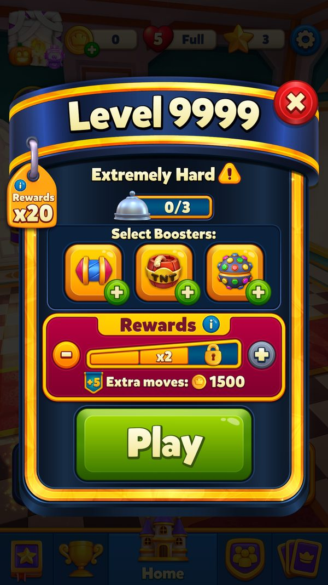
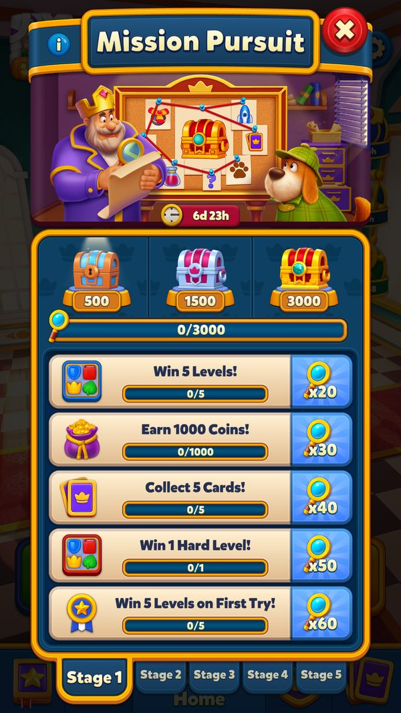
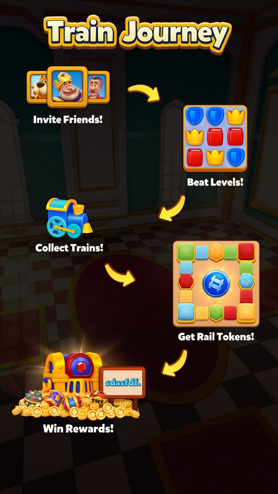
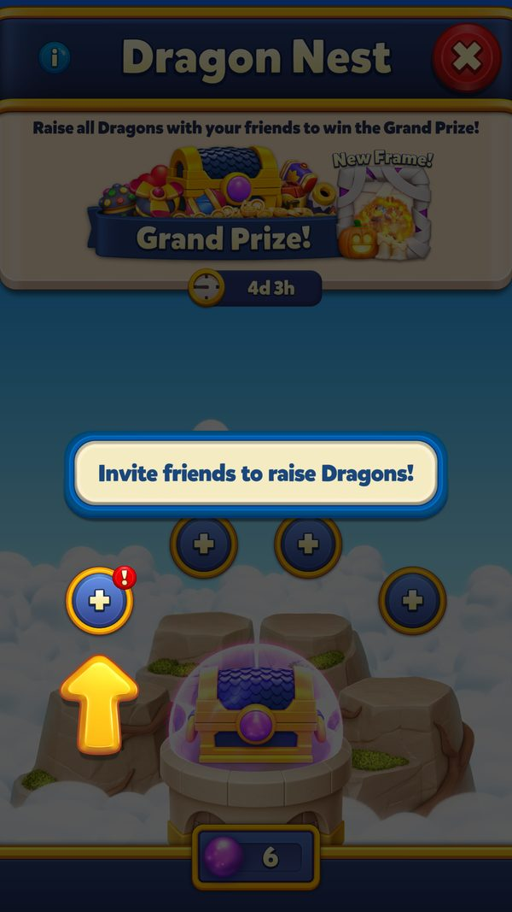
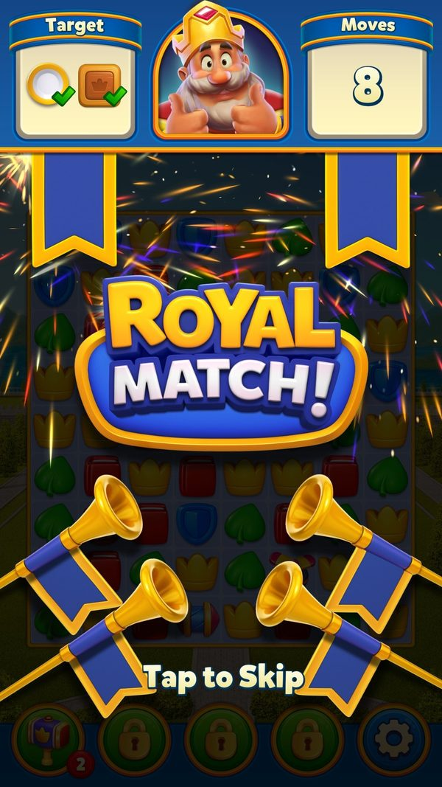

Kinh tế liên event: một level thắng nuôi bao nhiêu thanh tiến độ
Các event gắn thưởng vào nhau thế nào và mỗi level thắng nuôi bao nhiêu thanh tiến độ cùng lúc?
Bài nhìn toàn cảnh: một level thắng được 'chia' cho những event nào, và mỗi khi một event trả bậc thì các event khác gắn thêm gì (gói thẻ, vé, Magic Ball, năng lượng). Đọc khoảng 6 phút. Đọc kèm Mùa thẻ (bảng gói thẻ chi tiết) và Đội & hợp tác (Train Journey, Dragon Nest).
- ✅ Giá trị thật: lấy thẳng từ code, config server thật, save hoặc ảnh chụp khi chơi.
- 🧪 Ví dụ minh họa: con số đầu vào giả định để thấy cơ chế chạy; cách tính trong ví dụ là cách tính thật trong code.
- Tên kỹ thuật (class, method, key) để trong ngoặc hoặc ở dòng bằng chứng, để tra code khi cần.
Tóm tắt nhanh
- Một level thắng báo cho khoảng 25 event cùng lúc. Cộng thêm các hệ thống ngoài khe: Madness, pass, Weekly, League.Ví dụ 🧪 Người chơi level 120 trong khung thứ Sáu 11/09: một level thắng cộng vào Magic Cauldron, Book of Treasure, King's Cup, event đội, Daily Lightning Rush, Royal Pass, Weekly và nhiệm vụ Mission Control — 8+ thanh.
- Bốn lớp gắn thưởng chéo. Khi một event trả bậc, bộ gắn thưởng hỏi 4 'người tiêu thụ' xem có gắn thêm gì không.Ví dụ ✅ Mùa thẻ (gói thẻ, 34 nguồn), Train Journey (vé, 16 nguồn), Dragon Nest (Magic Ball, 7 nguồn), King's Tales (năng lượng, bảng của server).
- Mỗi lớp có 'mốc vòng' chống thưởng ngược. Chỉ vòng có mã lớn hơn mốc mới được gắn.Ví dụ ✅ Mốc King's Cup trong mùa thẻ = 716, vòng đang chạy = 720 → được gắn. Train Journey mặc định đặt mốc 100000 cho mọi nguồn → vé chỉ được gắn khi server ghi mốc thật (suy luận).
- Chống nhận trùng giữa các hệ. Vòng Space Mission, Sky Race, Clash of Champions đã nhận được ghi riêng trong từng lớp.Ví dụ ✅ Mùa thẻ, Train Journey, King's Tales đều có cờ 'vòng Space Mission / Sky Race / Clash of Champions đã nhận cuối cùng'.
- Hệ số nhân áp cho 24 nhóm đích. Token nhân hoặc chọn hạng level nhân tiền tệ của hầu hết event.Ví dụ ✅ League, Team Battle, King's Cup, Team Treasure, Hidden Temple, Dragon Nest, Train Journey, Team Tournament, Magic Cauldron, Archery Arena, Royal World Cup, Duke's Fortune, Ocean Odyssey, Puzzle Break, Merge Smith, King's Tales, Propeller Rush, Daily Lightning Rush, Pinata, Balloon Rise, Royal Pass, Weekly Pass, Madness, Mission.
- Nhiệm vụ là lớp thứ ba. Chơi event này làm luôn nhiệm vụ của event khác.Ví dụ ✅ Mã nhiệm vụ: xong công thức Magic Cauldron = 3, lên bậc Balloon Rise = 4, bia Archery Arena = 6, bậc Madness = 16/17, mở cổng Hidden Temple = 42.
- Cuối vòng, tiền dư chảy dọc theo lịch. Tiền tệ còn lại chuyển sang event kế tiếp cùng khe.Ví dụ 🧪 Hết vòng Puzzle Break còn mảnh ghép → chuyển sang Merge Smith hoặc Ocean Odyssey vòng sau (nếu A/B bật).
Ví dụ xuyên suốt: cùng một level thắng ở level 11 và ở level 120
✅ Hai dòng đầu là đo trên máy ngày 06/10 (tài khoản test, chưa có event). 🧪 Các dòng sau giả định một người chơi level 120 có đội, chơi trong khung thứ Sáu 09/09 – 11/09 với đúng các event đang chạy thật (Magic Cauldron 162, Book of Treasure 703, King's Cup, Mission Control 112, Daily Lightning Rush 494) và Train Journey đang chạy ở khe hợp tác; số vật phẩm mỗi level là giả định.
| Lúc | Người chơi làm gì | Game phản hồi | Kết quả |
|---|---|---|---|
| ✅ Level 11 | Thắng | Chỉ coin và sao thay đổi | Coin 2.629 → 2.674 (+45), sao 4 → 5; 0 thanh event |
| ✅ Level 12 | Thắng (dùng 3 booster trước màn) | 8 nước dư nổ thành special item rồi đổi coin | Coin +38, sao +1; 0 thanh event |
| 🧪 Level 120, một level thắng | Thắng, dư 5 nước | Báo thắng cho mọi event: elixir Magic Cauldron, vật phẩm Book (+5 × 5 từ nước dư), cúp King's Cup, đơn vị event đội, tia sét Daily Lightning Rush (nếu đang trong nhóm), chìa khoá Royal Pass, +1 level Weekly, nhiệm vụ Mission Control | 8+ thanh cùng tăng |
| 🧪 Book qua bậc 21 | — | Thưởng gốc 2 A; Train Journey đang chạy → gắn thêm 100 Tk; bậc 21 không có trong bảng gói thẻ | 2 A + 100 Tk |
| 🧪 Book qua bậc 22 | — | Thưởng gốc 60 ULB; mùa thẻ gắn 1 CP6 | 60 ULB + 1 CP6 |
| 🧪 Magic Cauldron xong stage 2 | Đoán đúng công thức 4 lọ | Thưởng stage (1 T, config v178); mùa thẻ gắn 1 CP2; nhiệm vụ 'công thức Magic Cauldron' của Mission Control +1 | 1 T + 1 CP2; nhiệm vụ 2/4 |
| 🧪 Thứ Sáu 11/09 08:00 UTC | King's Cup chốt hạng 1 | Thưởng gốc 180 ULV, 3 R, 3 T, 3 L, 1 H, 1 Ca, 1 A, 1 J; mùa thẻ gắn 1 CP6; Train Journey gắn 50 Tk | Một lần nhận, 3 nguồn thưởng |
| 🧪 Cùng lúc | Khe thu thập hết vòng | Elixir dư: đổi Hammer hoặc chuyển sang event kế tiếp cùng khe | Không mất trắng |
Ở level 11 một trận thắng chỉ đáng 'coin + sao'. Ở level 120 cùng một trận thắng nuôi hơn chục thanh, và mỗi mốc lại kéo thêm quà từ event khác — mật độ thưởng tăng theo cấp số chứ không tuyến tính.






Ảnh chụp minh họa (8)
Ảnh cập nhật 09/10/2026: dùng ảnh playtest đã kiểm tra và ảnh mới chụp trong game offline. Config từ cache/default APK; EventId, deadline, progress hoặc AB có thể là fixture cục bộ. Chỉ chuỗi có đánh số và ghi trước/sau mới thuộc cùng phiên thao tác. Screenshot không chứng minh request server, analytics, thanh toán hay claim online. Save gốc khôi phục trước bỏ chặn mạng.












Luồng hoạt động (10 bước)
Tóm lại: thắng level → báo cho ~25 event → nhân hệ số → cộng nhiệm vụ chéo → event đạt bậc → hỏi 4 lớp gắn thưởng (kiểm mốc vòng) → gộp quà → hết vòng chuyển tiền dư trong khe
Ảnh cập nhật 09/10/2026: dùng ảnh playtest đã kiểm tra và ảnh mới chụp trong game offline. Config từ cache/default APK; EventId, deadline, progress hoặc AB có thể là fixture cục bộ. Chỉ chuỗi có đánh số và ghi trước/sau mới thuộc cùng phiên thao tác. Screenshot không chứng minh request server, analytics, thanh toán hay claim online. Save gốc khôi phục trước bỏ chặn mạng.
- 1Thắng một levelClientGame báo cho khoảng 25 event; event không bị chặn cộng tiền tệ riêng. Hệ thống ngoài khe cũng cộng.Ví dụ 🧪 Một trận: +elixir, +vật phẩm sách, +cúp, +khiên, +chìa khoá Royal Pass, +1 level Weekly.
Ảnh minh họa giao diện của bước; chỉ những thay đổi trước/sau được ghi rõ trong caption mới là chuỗi đã thao tác.
EventsHelper.WonLevel; MadnessManager.TryAddFlowActions; WeeklyLeaderboardManager.get_MyScore; LeagueManager.UpdateRankLocally - 2Áp hệ số nhânClientLevel được nhân (token hoặc chọn hạng) thì tiền tệ của các event nhân được × 2 hoặc × 3; mỗi event có nhãn nhân riêng.Ví dụ ✅ Nhãn MultiplierTagShieldIcon (Team Battle), MultiplierTagCupIcon (King's Cup), MultiplierTagBookIcon (Book of Treasure).
Ảnh minh họa giao diện của bước; chỉ những thay đổi trước/sau được ghi rõ trong caption mới là chuỗi đã thao tác.
EventsHelper.GetCollectableCountWithMultiplier; MultiplierUtil.GetIconDataForDefault; *Manager.GetMultiplierTagConfig - 3Cộng nhiệm vụ chéoClientCác event gọi cộng tiến độ nhiệm vụ; Mission Control / Mission Pursuit đang chạy nhận và hiện thông báo khi xong nhiệm vụ.Ví dụ 🧪 Qua bậc Book of Treasure → nhiệm vụ 'bậc Book of Treasure' của Mission Control +1 (stage 1 cần 8).
Ảnh minh họa giao diện của bước; chỉ những thay đổi trước/sau được ghi rõ trong caption mới là chuỗi đã thao tác.
MissionEventsCommonTaskHelper.SetMissionProgressAmount; MissionControlManager.TryAddMissionCompletedActions; MissionEventsNotificationManager.TryShowPushNotification - 4Event đạt bậc → hỏi bộ gắn thưởngClientEvent gọi hàm 'lấy thưởng đã ghi đè' của mình (hơn 40 hàm cho từng event); bộ gắn thưởng chạy lần lượt 4 lớp và gom phần cộng thêm.Ví dụ ✅ Ví dụ hàm: GetOverriddenKingsCupRewards, GetOverridenBalloonRiseRewards, GetOverridenBookOfTreasureReward.
Chưa có ảnh runtime cho nhánh này: phiên offline thiếu trạng thái/config/nhóm tương ứng hoặc chưa thực hiện giao dịch. Không dùng ảnh màn khác thay thế.
gd_dossier EventRewardOverrider; EventRewardOverrider.Bind / GetOverrideConfigListForEventStep - 5Lớp 1: gói thẻ mùaClientCần mùa thẻ đang cho phép và vòng có mã lớn hơn mốc; Royal Pass xét 10 mã kế tiếp; Area và Daily Rewards luôn được.Ví dụ ✅ Mùa 15 v305: 34 nguồn (chi tiết ở bài Mùa thẻ).
Chưa có ảnh runtime cho nhánh này: phiên offline thiếu trạng thái/config/nhóm tương ứng hoặc chưa thực hiện giao dịch. Không dùng ảnh màn khác thay thế.
EventRewardOverrider.CheckLastEventIdForSeasonalCardCollection (pseudo-C) - 6Lớp 2: vé Train JourneyClientKhi Train Journey chạy, cộng vé theo bảng của nó; mỗi nguồn có mốc vòng riêng.Ví dụ ✅ Mặc định 16 nguồn: King's Cup hạng 1 → 50 Tk, Book of Treasure bậc 21 → 100 Tk.
Ảnh minh họa giao diện của bước; chỉ những thay đổi trước/sau được ghi rõ trong caption mới là chuỗi đã thao tác.
EventRewardOverrider.GetOverrideConfigForTrainJourney (pseudo-C: mốc < eventId); Resources/train_journey_default_config.json - 7Lớp 3: Magic Ball Dragon NestClientKhi Dragon Nest chạy và vòng vượt mốc, cộng Magic Ball.Ví dụ ✅ Mặc định 7 nguồn; lớn nhất Book of Treasure bậc 23 và Propeller Madness bậc 17 → 200 Mb.
Ảnh minh họa giao diện của bước; chỉ những thay đổi trước/sau được ghi rõ trong caption mới là chuỗi đã thao tác.
EventRewardOverrider.GetOverrideConfigForDragonNest; Resources/dragon_nest_default_config.json - 8Lớp 4: năng lượng King's TalesServerBảng gắn năng lượng chỉ có ở server (không có bản mặc định).Ví dụ (server, chưa đọc được) — King's Tales không chạy lúc đo.
Bước xử lý nền/giao thức, không có màn riêng để chụp. Bằng chứng là code/config ở dòng nguồn; ảnh UI không xác nhận thao tác server.
EventRewardOverrider.GetOverrideConfigForShortExpeditionEvent; gdd/ExpeditionEvent.json - 9Gộp quàClientThưởng gốc + phần gắn thêm vào một gói; bảng mở gói thẻ hiện ngay sau hộp nhận; cờ 'vòng đã nhận' chặn nhận hai lần.Ví dụ 🧪 Sky Race hạng 1 bị gửi nhận 2 lần (retry) → gói CP4 và 30 Tk chỉ cộng một lần.
Chưa có ảnh runtime cho nhánh này: phiên offline thiếu trạng thái/config/nhóm tương ứng hoặc chưa thực hiện giao dịch. Không dùng ảnh màn khác thay thế.
SeasonalCardCollectionManager.UpdateLastClaimedSkyRaceEventId; TrainJourneyProgress (LastClaimedSkyRaceEventId) - 10Hết vòng: chuyển tiền dư trong kheClientCòn tiền tệ → chuyển sang event kế tiếp cùng khe, có hoạt cảnh; A/B tắt thì đổi quà tối đa 3 lần.Ví dụ 🧪 Hết Hidden Temple còn 40 cuốc → chuyển sang event kế tiếp trong khe thu thập.
Chưa có ảnh runtime cho nhánh này: phiên offline thiếu trạng thái/config/nhóm tương ứng hoặc chưa thực hiện giao dịch. Không dùng ảnh màn khác thay thế.
RemainingCollectablesConversionManager.TrySetShouldConvertCollectable / GetTargetEventFromGroup / TryPushRemainingCollectablesConversionDialog
Nhánh & ngoại lệ
| Khi | Thì | Ví dụ | Bằng chứng |
|---|---|---|---|
| Event tiêu thụ không chạy | Lớp đó không gắn gì; event nguồn chỉ trả thưởng gốc (+ gói thẻ nếu mùa thẻ chạy). | ✅ Train Journey và Dragon Nest chung khe → trong một vòng chỉ một trong hai được gắn. | EventRewardOverrider.GetOverrideConfigForTrainJourney / GetOverrideConfigForDragonNest; Mem_EventDependencyConfig_v291.json |
| Vòng nguồn bắt đầu trước khi lớp tiêu thụ ghi mốc | Không gắn thưởng — tránh mùa / vòng mới thưởng ngược cho vòng cũ. | ✅ Train Journey mặc định mốc 100000 → không vòng nào vượt. | train_journey_default_config.json (<ev>LastEventId = 100000) |
| Một vòng được nhận lại nhiều lần (retry, tự nhận) | Cờ 'vòng đã nhận' chặn gắn thêm lần thứ hai. | 🧪 Space Mission tự gửi nhận sau khi mất mạng → gói thẻ không cộng lại. | SeasonalCardCollectionDynamicProgress (LastClaimed* 41..64, 177..191); ShortExpeditionEventProgress (457..495) |
| Event bị chặn bởi khe | Không cộng, không trả bậc, nên không kích hoạt gắn thưởng; nhiệm vụ trỏ tới nó chuyển sang dự phòng. | 🧪 Khe đang hiện Magic Cauldron → Hidden Temple không trả bậc nào → không có gói thẻ Hidden Temple. | AEventManager.get_IsEventBlockedByEventDependency; EventDependencyManager.ShouldEventUseFallback |
| Level không được nhân (bonus, level phụ) | Không tiêu token, tiền tệ không nhân. | 🧪 Level King's Nightmare → mọi thanh cộng giá trị gốc. | MultiplierTokenManager.CanSpendTokensOnLevelEnter |
Bốn lớp gắn thưởng
| Lớp | Vật phẩm | Số nguồn | Mốc chống trùng | Số liệu | Ví dụ |
|---|---|---|---|---|---|
| Mùa thẻ | gói CP2 / CP3 / CP4 / CP6 / CPG | 34 | 27 mốc vòng (runtime) + bộ mốc thứ hai | Server (v305) | ✅ Weekly hạng 1 → 1 CPG |
| Train Journey | vé (Tk) | 16 | 23 mốc (mặc định 100000) | Client mặc định | ✅ Team Tournament hạng đội 1 → 50 Tk |
| Dragon Nest | Magic Ball (Mb) | 7 | mốc vòng (mặc định 0) | Client mặc định | ✅ Pinata mốc 3 → 50 Mb |
| King's Tales | năng lượng (EEc) | server | 23 mốc | (server, chưa đọc được) | — |
Vé Train Journey gắn vào event khác (mặc định)
| Nguồn (mã client) | Bậc / hạng → vé | Ví dụ |
|---|---|---|
| Pinata Party (0) | 1 → 10 · 2 → 20 · 3 → 30 | 🧪 Xong cả 3 mốc → 60 vé |
| Balloon Rise (1) | 3 → 10 · 7 → 20 · 10 → 30 | |
| Lightning Rush (2) | 1 → 20 | |
| Hidden Temple (3) | 3 → 10 · 4 → 20 · 5 → 30 | |
| Magic Cauldron (4) | 5 → 10 · 10 → 20 · 1000 (hoàn thành) → 50 | |
| Book of Treasure (5) | 3 → 10 · 6 → 20 · 11 → 30 · 15 → 40 · 18 → 50 · 21 → 100 | 🧪 Tới bậc 21 → tổng 250 vé |
| Propeller Madness (6) | 3 → 10 · 5 → 20 · 9 → 30 · 14 → 40 · 17 → 50 | |
| Archery Arena (7) | mốc 2006 / 2010 / 2017 → 10 / 20 / 30 · hạng 1001 / 1002 / 1003 → 50 / 20 / 10 | |
| King's Cup (13) | hạng 1 → 50 · 2 → 20 · 3 → 10 | |
| Team Treasure (14) | 1 → 10 · 2 → 20 · 3 → 30 | |
| Space Mission (16) | 2 → 10 · 3 → 20 | |
| Sky Race (17) | hạng 1 → 30 · 2 → 20 · 3 → 10 | |
| Team Tournament (18) | hạng 1001 / 1002 / 1003 → 50 / 20 / 10 · rương 2005 / 2006 / 2007 → 10 / 20 / 30 | |
| Mission Pursuit (19) | 2 → 10 · 3 → 20 | |
| Mission Control (22) | 3 → 10 · 4 → 20 · 1000 → 50 | |
| Ocean Odyssey (27) | 1 → 10 · 3 → 20 · 5 → 50 |
Magic Ball Dragon Nest gắn vào event khác (mặc định)
Magic Ball đến từ các event PvE 'nền'; vé Train Journey đến cả từ thi đấu. Dragon Nest được thiết kế để tiêu phần thưởng phụ của Madness và khe thu thập; Train Journey còn ăn theo King's Cup, Sky Race, Archery Arena, Team Tournament.
| Nguồn (mã client) | Bậc → Magic Ball | Ví dụ |
|---|---|---|
| Pinata Party (0) | 3 → 50 | |
| Balloon Rise (1) | segment × 1000 + bậc: 1010, 2010, 3010, 4010, 5010, 6010, 7010 → 50 · 3005, 4005, 5005, 6003, 7003 → 10 · 6007, 7007 → 20 | 🧪 Segment 6 tới bậc 10 → 10 + 20 + 50 = 80 Mb |
| Lightning Rush (2) | 1 → 20 | |
| Hidden Temple (3) | 5 → 50 | |
| Magic Cauldron (4) | 5 → 10 · 10 → 20 · 1000 → 50 | |
| Book of Treasure (5) | 3 → 10 · 6 → 20 · 11 → 30 · 15 → 40 · 18 → 50 · 21 → 100 · 23 → 200 | 🧪 Tới bậc 23 → tổng 450 Mb |
| Propeller Madness (6) | 3 → 10 · 5 → 20 · 7 → 30 · 9 → 60 · 14 → 100 · 17 → 200 |
Mật độ thưởng: nhận xét
- Một bậc có thể trả 3 lớp quà.Ví dụ 🧪 Book of Treasure bậc 21: 2 A + 100 Tk (nếu Train Journey chạy) hoặc 100 Mb (nếu Dragon Nest chạy) — hai event này chung khe nên chỉ một trong hai.
- Gói thẻ có mặt ở hầu hết bậc 'rương'. Mùa thẻ vì thế tiến đều theo nhịp chơi.Ví dụ ✅ Book of Treasure: bậc 9 (SmallChest) CP2, bậc 14 (MediumChest) CP3, bậc 24 (BigChest) CP4.
- Bơm một event mới mà không đụng event nguồn. Live-ops chỉ cần chỉnh bảng của chính event tiêu thụ.Ví dụ 🧪 Ra mắt Train Journey: bật bảng vé 16 nguồn → mọi event nguồn tự 'đẹp thưởng' hơn.
Số liệu chính
| Chỉ số | Giá trị | Số liệu do | Nguồn |
|---|---|---|---|
| Event nhận báo thắng level | ~25 | Client | EventsHelper.WonLevel (gdd/EventsFramework.json UC-11) |
| Lớp gắn thưởng | 4 | Client | EventRewardOverrider.Bind; gd_dossier EventRewardOverrider |
| Nguồn gói thẻ | 34 | Server | PingResponse_SeasonalCardCollectionInfo_Config_v305.json |
| Nguồn vé Train Journey | 16 | Client | Resources/train_journey_default_config.json |
| Nguồn Magic Ball Dragon Nest | 7 | Client | Resources/dragon_nest_default_config.json |
| Nhóm đích hệ số nhân | 24 | Client | MultiplierUtil.Add* (gd_dossier) |
| Hàm 'thưởng đã ghi đè' trong bộ gắn thưởng | > 40 | Client | gd_dossier EventRewardOverrider |
| Một trận thắng ở level 11 | +45 coin, +1 sao, 0 thanh event | Đo trên máy | feature_extras.json (LevelFlow, 06/10) |
| Một trận thắng ở level 12 | +38 coin, +1 sao | Đo trên máy | feature_extras.json (LevelFlow, 06/10) |
Đánh giá
Thang 1–5 (với tiêu chí rủi ro, 5 = rủi ro cao). Trung bình: 3.4.
| Tiêu chí | Điểm | Nhận xét |
|---|---|---|
| Mật độ thưởng, cảm giác tiến bộ | 5/5 | Mỗi trận thắng đẩy nhiều thanh, mỗi bậc trả nhiều lớp quà. |
| Giữ chân | 5/5 | Event tiêu thụ (Dragon Nest, Train Journey, mùa thẻ) được mọi event khác nuôi — bỏ một ngày là mất nhiều nguồn cùng lúc. |
| Dễ cân bằng kinh tế | 1/5 | Tổng thưởng mỗi ngày = khe × lịch × hệ số × 4 bảng gắn × nhiệm vụ; không có ngân sách tập trung thấy được. |
| Minh bạch | 2/5 | Người chơi thấy quà cuối nhưng không biết vì sao cùng một bậc lúc có vé, lúc không. |
| Rủi ro lạm phát | 4/5 | Thêm một lớp gắn là tăng thưởng toàn hệ thống; hệ số × 2 / × 3 còn khuếch đại. |
- Mô hình 'nhà sản xuất – người tiêu thụ': event PvE tạo tiền tệ phụ, event xã hội và mùa thẻ tiêu thụ.
- Mốc vòng và cờ 'vòng đã nhận' là mẫu chống trùng đơn giản, dùng lại cho mọi lớp.
- Ra mắt event mới chỉ bằng bảng gắn thưởng, không sửa event nguồn.
- Logic rải qua hơn 40 hàm, mỗi event một kiểu tham số.
- Mã bậc không thống nhất (segment × 1000 + bậc, 1001–1003 cho hạng, 1000 cho hoàn thành, nhóm × 10 + bước).
- Mốc mặc định 100000 của Train Journey: server quên ghi mốc là vé không bao giờ được gắn (lỗi im lặng).
- Lạm phát booster / coin khi nhiều lớp cùng chạy trong cụm thứ Sáu 08:00 UTC.
- Khó tái hiện lỗi thưởng vì phụ thuộc trạng thái của 4 event tiêu thụ và các mốc vòng.
- Gom thưởng chéo về một đường ống chung với khoá thống nhất (loại event, mã vòng, loại bậc) và ghi log từng phần cộng thêm.
- Chuẩn hoá loại bậc (Bậc / Hạng / Rương / Hoàn thành) thay vì mã số ghép.
- Đặt ngân sách thưởng chéo mỗi ngày cho từng lớp, ví dụ tối đa N gói thẻ / ngày / người, và cảnh báo khi config vượt.
- Hiện nhãn nguồn ngay trên quà ('+50 vé Train Journey') để người chơi thấy liên kết.
Liên quan
Khung sự kiện (Events) Sưu tập thẻ mùa (SCC) Train Journey (TJ) Dragon Nest Kings Tales (Expedition) Mission Control (MCo) Mission Pursuit Multiplier Token (Royal Boost) Chọn hệ số level (Multiplier) Book of Treasure (BoT) Propeller Madness King's Cup Luồng chơi level (LevelFlow) 📊 Khung sự kiện: một event sống thế nào từ lúc server gửi tới lúc đóng 📊 Mùa thẻ (Seasonal Card Collection): gói thẻ, thẻ trùng và sợi dây nối mọi event 📊 Event đội và hợp tác: Team Battle, Team Treasure, Team Tournament, Dragon Nest, Train Journey 📊 Event tiến trình & thu thập: tiền tệ sự kiện, minigame và bậc thưởng 📊 Madness (Book of Treasure / Propeller Madness) và các lớp nhân điểm sự kiện 📊 Thi đấu cá nhân: đua, xếp hạng và người chơi ảo 📊 Config từ xa đi xuống máy người chơi như thế nào
Nguồn đã đọc
gdd/EventsFramework.jsongdd/TrainJourney.jsongdd/DragonNest.jsongdd/ExpeditionEvent.jsongdd/SeasonalCardCollection.jsongd_dossier EventRewardOverrider; gd_condense EventRewardOverrider.Bind / GetOverrideConfigListForEventStepEventRewardOverrider.CheckLastEventIdForSeasonalCardCollection / GetOverrideConfigForDragonNest / GetOverrideConfigForTrainJourney (pseudo-C)gd_dossier MultiplierUtilResources/train_journey_default_config.jsonResources/dragon_nest_default_config.jsonfacts/runtime/server_configs/PingResponse_SeasonalCardCollectionInfo_Config_v305.jsonfacts/runtime/server_fetched/_win_8to9_response.jsonfeatures/RemainingCollectablesConversionManager.mdfeature_extras.json + screenshots/ (đo trên máy 06/10/2026)